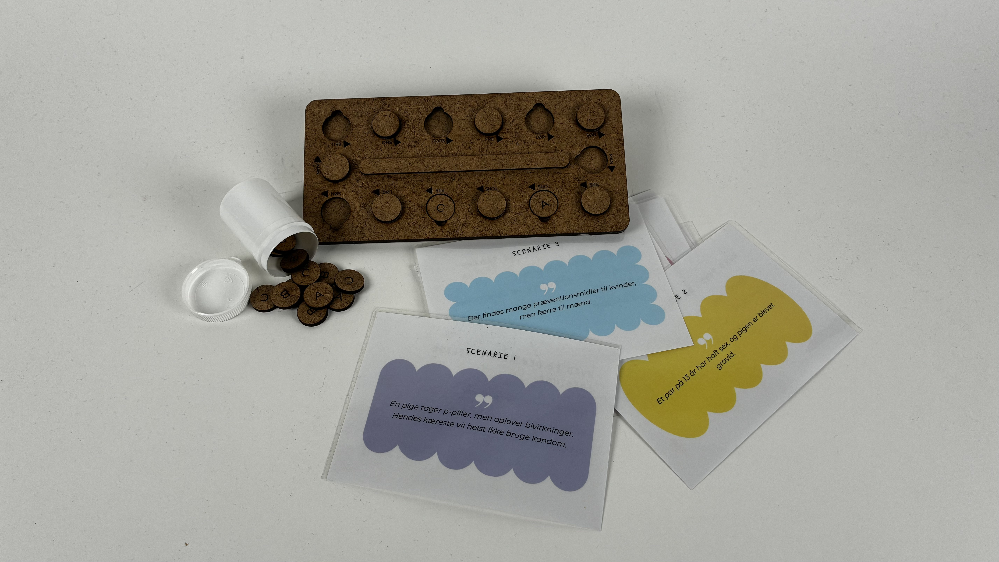
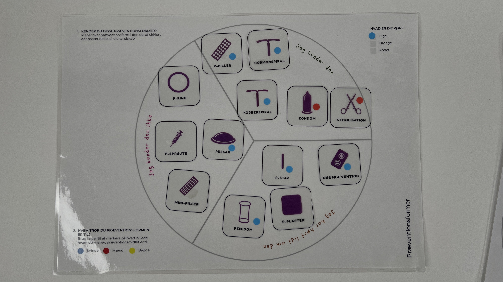

Using participatory workshops to understand knowledge, assumptions and responsibility.
The workshop was developed as part of the research process for The Future Consultation installation at Steno Museum.
Working directly with young people allowed us to explore what participants already knew about contraception, how they understood responsibility and how they responded when familiar gender roles were challenged.

Designing activities that made room for discussion rather than correct answers.
We designed and facilitated a series of participatory activities with students from different school classes.
Visual mapping exercises, contraceptive method cards and discussion-based scenarios invited participants to share their knowledge, assumptions and opinions.
The workshop allowed us to observe not only what participants knew, but how they negotiated responsibility and responded to each other's perspectives.
Facilitation
Our role was not only to design the workshop materials, but also to facilitate the sessions and create a setting where sensitive topics could be discussed openly.
We introduced activities, guided conversations, observed group dynamics and adapted the facilitation when participants responded with humour, uncertainty or disagreement.
Designing for sensitive topics
Because contraception can be personal and socially sensitive, participation was designed so students could contribute without being required to disclose personal experiences.
This allowed the workshop to remain open and exploratory while still producing meaningful qualitative insights.

Mapping what participants knew — and where knowledge became uneven.
Condoms and birth control pills were widely recognised, while methods such as the vaginal ring, contraceptive patch, diaphragm and female condom were much less familiar.
The scenario discussions also revealed how responsibility for contraception was negotiated between genders.
These conversations became an important foundation for the final Future Consultation installation and its deliberate use of mismatched contraceptive recommendations.
Turning workshop observations into concrete design decisions.
The workshops were not treated as a separate research exercise. Findings were incorporated directly into the design process.
Participants' responses helped us refine the scenarios, identify where additional contraceptive information was needed and understand which assumptions around gender and responsibility the installation could meaningfully challenge.
Methods
Participatory Design
Workshop Facilitation
User Research
Scenario-Based Research
Observation
Qualitative Analysis
Focus
Contraception
Gender & Responsibility
Youth Perspectives
Knowledge Mapping
Design Research